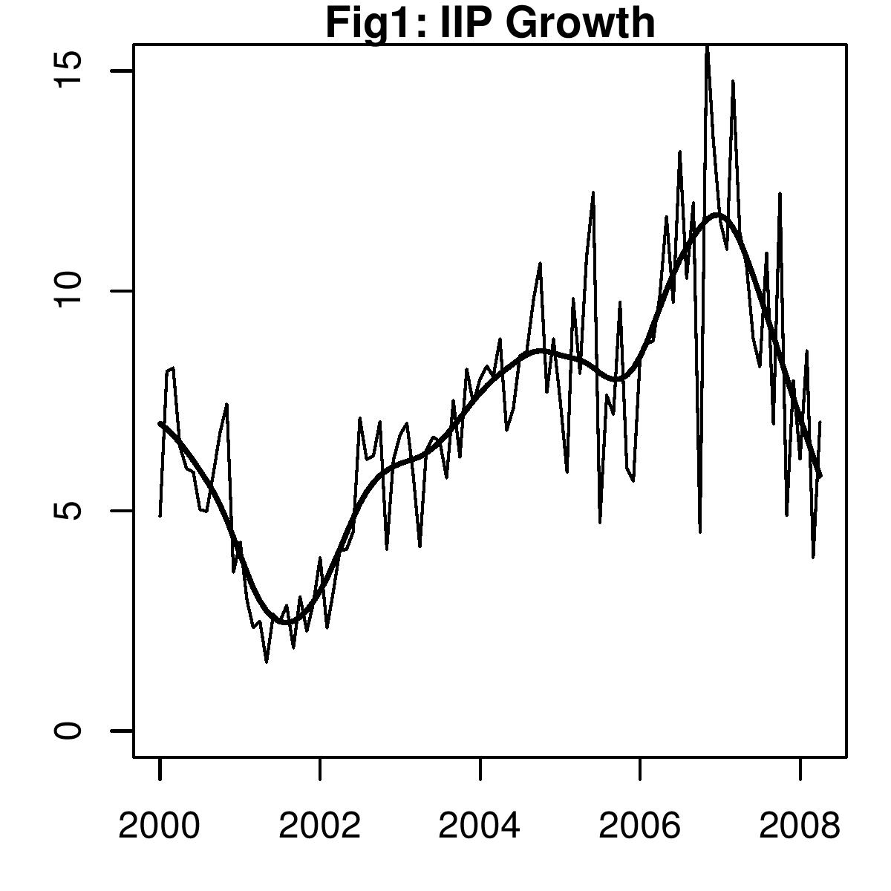

Shoot inflation, spare growth
Financial Express, 21 June 2008
Inflation is up to a shocking 11% level. At the same time, the picture on output growth is daunting. Industrial production in India has been slowing down since the third quarter of 2007. Data for April, released last week, shows that growth in the Index of Industrial Production at 7.02 per cent continued to remain in single digits.
The figure shows the raw data for the year-on-year growth in IIP as well as the smoothed series. As the smoothed series shows, there are cycles in the growth rate. There is a lot of media focus on month to month IIP reports. These reports show fluctuations: e.g. from 3% in March to 7% in April. The smoothed series helps us understand deeper trends. We can see the upswing until the middle of last year: industrial growth was accelerating in this period. Since then there has been a downturn in the growth rate.
The data is released and revised with a lag. It is difficult to know whether a monthly observation is merely a one-off irregularity or reflects a change in direction of the business cycle. However, now, a cyclical downturn in IIP seems to be underway.
All market economies experience business cycle phenomena. The Indian economy has been witnessing modern business cycles since liberalisation. Once the economy moved away from the planned investment and industrial licensing, it has experienced investment and inventory cycles. In an upturn, investment is buoyant and inventories are small. In a downturn, investment declines and inventories build up. Also, as the economy has opened up to the world, it is impacted by global business cycles.
The ultimate objective of monetary policy should be to reduce the volatility of the business cycle. This task is achieved by devoting the full power of monetary policy to delivering low and stable inflation. In India, the domestic economy was seen to be overheating early last year. A sound macroeconomic policy framework would have brought down inflation while trying to preserve growth. The policy mix actually adopted has delivered quite the opposite. It has brought down growth while inflation has gone up.
A large part of the responsibility of the behaviour of prices and industrial growth lies with monetary policy. RBI and the government continued to worry about the rupee dollar rates and exports growth, and neglect the needs of the domestic economy.
With elections impending, the political salience of inflation could not be higher. Extreme measures are likely to be taken in combating inflation, such as controls and restrictions on the private sector in various areas of business, and sharp interest rate hikes. The flow of such extreme measures - which have already begun - damages confidence of the private sector in India's economic policy institutions. The confidence of the private sector influences a crucial component of GDP today: private investment. If private investment drops by 5 percentage points of GDP, we would tip into a full blown recession.
We are now experiencing the dreaded `stagflation' where low growth is combined with double digitinflation. Many emerging market economies are today in a similar stagflationary situation, with high inflation and slowing output growth. In developed countries, stagflation was faced in the 1970s. It led to substantial changes in the monetary policy framework, and from the early 1980s onwards, this problem has not recurred. Unlike developed markets, most emerging market economies do not have sound monetary policy frameworks in place.
The Raghuram Rajan committe on financial sector reforms has recommended that the RBI should focus on controlling inflation in India rather than on the rupee dollar rate. When a central bank focusses on inflation, it is able to gear its policies towards reducing prices without indulging in shock therapy. A low and stable inflation rate encourages growth as businesses and households are able to make investment and consumption decisions.
When a central bank is focused on the rupee-dollar exchange rate, the nominal exchange rate against the dollar is stable, but interest rates and inflation are volatile. When monetary policy reforms put the focus of the central bank on inflation, this tends to stabilise inflation and interest rates.
In 2006 and 2007, when there were pressures on rupee appreciation, RBI responded by buying dollars, flooding the system with liquidity, and inducing low real rates. A well structured central bank would - at the time - have focused on inflation as the goal. It would have permitted a rupee appreciation at the time. This strategy would have kept prices low through three channels: The direct impact of a strong rupee would have yielded cheaper imports, the smaller domestic monetary expansion and the lowered demand caused by reduced exports. If this strategy had been followed, in 2008, we would have been holding low inflation and slowing growth, and monetary policy would then have been able to contribute to addressing the slowdown by cutting rates - as is being done by the central banks of developed countries.
Back up to Ila Patnaik's media page
Back up to Ila Patnaik's home page